หน้า 1 — บทที่ 10 โปรโตคอลบนชัน้ สือ่ สาร
ดูภาพต้นฉบับหน้า 1
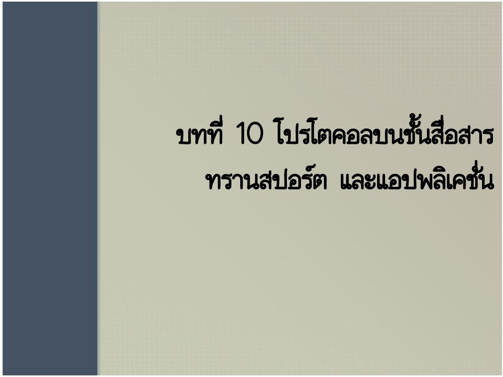
คลิกภาพเพื่อเปิดขยาย
อ่านข้อความต้นฉบับที่สกัดได้ (ไทย/อังกฤษตามไฟล์)
บทที่ 10 โปรโตคอลบนชัน้ สือ่ สาร
ทรานสปอร์ต และแอปพลิเคชั่น
ทบทวนภาษาไทย: UDP, TCP และ SCTPDomain Name System: DNSRemote Login, E-mail และ FTPWorld Wide Web และ HTTP
กลับสารบัญ ↑หน้า 2 — การส่งมอบข้อมูลจากโปรเซสถึงโปรเซส
ดูภาพต้นฉบับหน้า 2
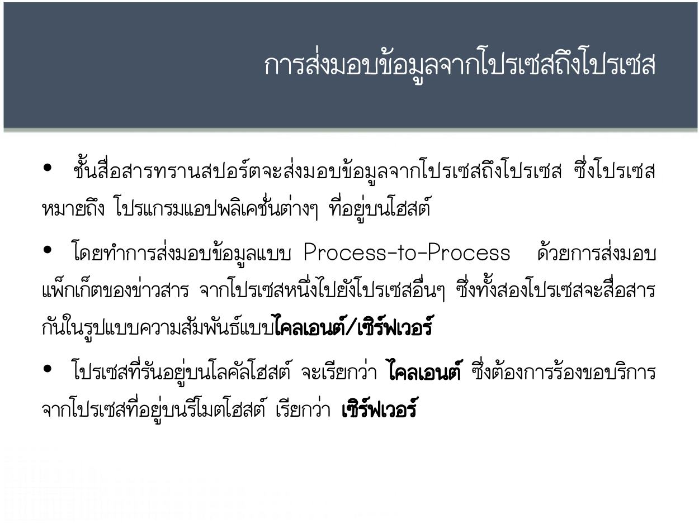
คลิกภาพเพื่อเปิดขยาย
อ่านข้อความต้นฉบับที่สกัดได้ (ไทย/อังกฤษตามไฟล์)
การส่งมอบข้อมูลจากโปรเซสถึงโปรเซส
• ชั้ นสื่อสารทรานสปอร์ ต จะส่ง มอบข้อมู ลจากโปรเซสถึ ง โปรเซส ซึ่ง โปรเซส
หมายถึง โปรแกรมแอปพลิเคชั่นต่างๆ ที่อยู่บนโฮสต์
• โดยทาการส่งมอบข้อมูลแบบ Process-to-Process ด้วยการส่งมอบ
แพ็กเก็ตของข่าวสาร จากโปรเซสหนึ่งไปยังโปรเซสอื่นๆ ซึ่งทั้งสองโปรเซสจะสื่อสาร
กันในรูปแบบความสัมพันธ์แบบไคลเอนต์/เซิร์ฟเวอร์
• โปรเซสที่รันอยู่บนโลคัลโฮสต์ จะเรียกว่า ไคลเอนต์ ซึ่งต้องการร้องขอบริการ
จากโปรเซสที่อยู่บนรีโมตโฮสต์ เรียกว่า เซิร์ฟเวอร์
ทบทวนภาษาไทย: UDP, TCP และ SCTPDomain Name System: DNSRemote Login, E-mail และ FTPWorld Wide Web และ HTTP
กลับสารบัญ ↑หน้า 3 — การกาหนดตาแหน่งที่อยู่
ดูภาพต้นฉบับหน้า 3
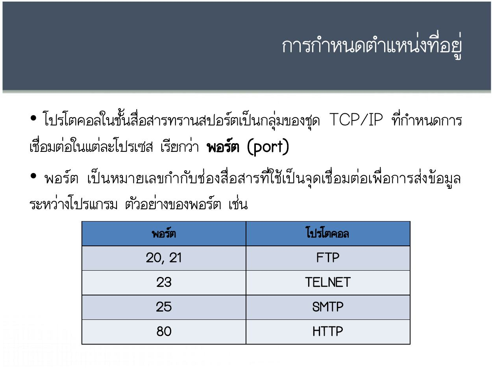
คลิกภาพเพื่อเปิดขยาย
อ่านข้อความต้นฉบับที่สกัดได้ (ไทย/อังกฤษตามไฟล์)
การกาหนดตาแหน่งที่อยู่
• โปรโตคอลในชั้นสื่อสารทรานสปอร์ตเป็นกลุ่มของชุด TCP/IP ที่กาหนดการ
เชื่อมต่อในแต่ละโปรเซส เรียกว่า พอร์ต (port)
• พอร์ต เป็ นหมายเลขกากั บ ช่ อ งสื่อสารที่ ใ ช้ เป็ นจุด เชื่ อมต่ อเพื่อการส่ง ข้อมู ล
ระหว่างโปรแกรม ตัวอย่างของพอร์ต เช่น
พอร์ต โปรโตคอล
20, 21 FTP
23 TELNET
25 SMTP
80 HTTPทบทวนภาษาไทย: UDP, TCP และ SCTPDomain Name System: DNSRemote Login, E-mail และ FTPWorld Wide Web และ HTTP
กลับสารบัญ ↑หน้า 4 — โปรโตคอลบนชั้นสื่อสารทรานสปอร์ต
ดูภาพต้นฉบับหน้า 4
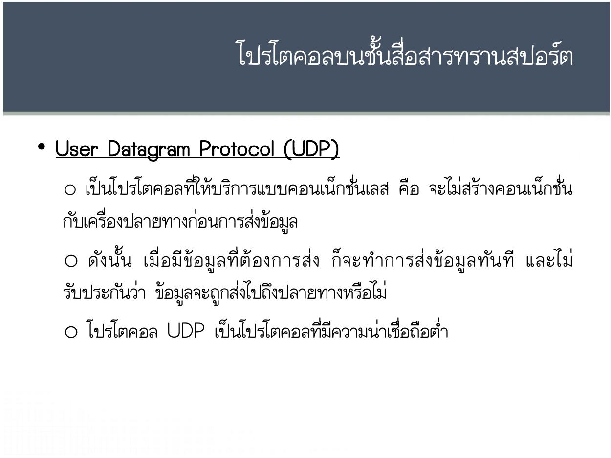
คลิกภาพเพื่อเปิดขยาย
อ่านข้อความต้นฉบับที่สกัดได้ (ไทย/อังกฤษตามไฟล์)
โปรโตคอลบนชั้นสื่อสารทรานสปอร์ต
• User Datagram Protocol (UDP)
o เป็นโปรโตคอลที่ให้บริการแบบคอนเน็กชั่นเลส คือ จะไม่สร้างคอนเน็กชั่น
กับเครื่องปลายทางก่อนการส่งข้อมูล
o ดั ง นั้ น เมื่ อ มี ข้ อ มู ล ที่ ต้ อ งการส่ ง ก็ จ ะท าการส่ ง ข้ อ มู ล ทั น ที และไม่
รับประกันว่า ข้อมูลจะถูกส่งไปถึงปลายทางหรือไม่
o โปรโตคอล UDP เป็นโปรโตคอลที่มีความน่าเชื่อถือต่า
ทบทวนภาษาไทย: UDP, TCP และ SCTPDomain Name System: DNSRemote Login, E-mail และ FTPWorld Wide Web และ HTTP
กลับสารบัญ ↑หน้า 5 — โปรโตคอลบนชั้นสื่อสารทรานสปอร์ต
ดูภาพต้นฉบับหน้า 5
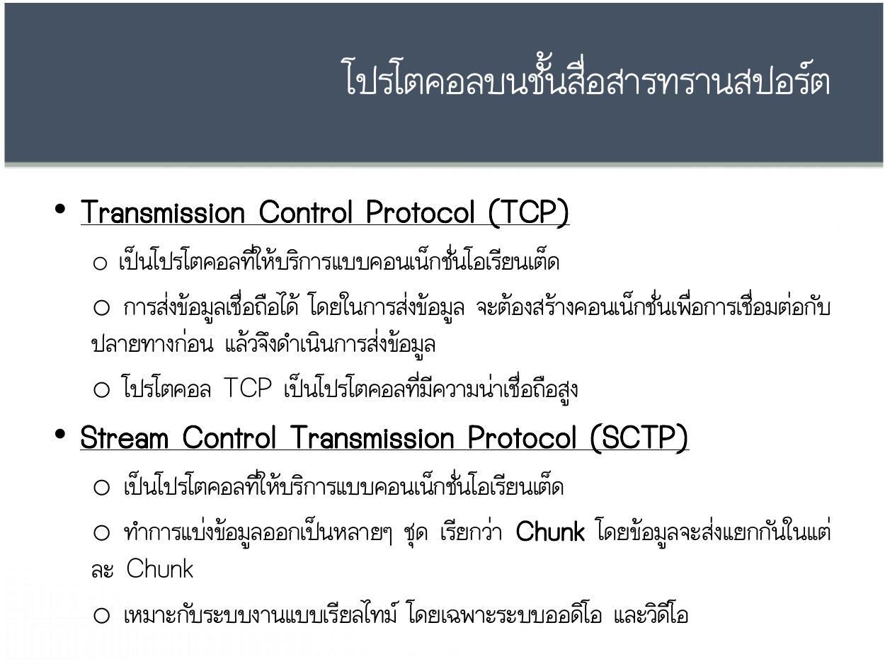
คลิกภาพเพื่อเปิดขยาย
อ่านข้อความต้นฉบับที่สกัดได้ (ไทย/อังกฤษตามไฟล์)
โปรโตคอลบนชั้นสื่อสารทรานสปอร์ต
• Transmission Control Protocol (TCP)
o เป็นโปรโตคอลที่ให้บริการแบบคอนเน็กชั่นโอเรียนเต็ด
o การส่งข้อมูลเชื่อถือได้ โดยในการส่งข้อมูล จะต้องสร้างคอนเน็กชั่นเพื่อการเชื่อมต่อกับ
ปลายทางก่อน แล้วจึงดาเนินการส่งข้อมูล
o โปรโตคอล TCP เป็นโปรโตคอลที่มีความน่าเชื่อถือสูง
• Stream Control Transmission Protocol (SCTP)
o เป็นโปรโตคอลที่ให้บริการแบบคอนเน็กชั่นโอเรียนเต็ด
o ทาการแบ่งข้อมูลออกเป็นหลายๆ ชุด เรียกว่า Chunk โดยข้อมูลจะส่งแยกกันในแต่
ละ Chunk
o เหมาะกับระบบงานแบบเรียลไทม์ โดยเฉพาะระบบออดิโอ และวิดีโอ
ทบทวนภาษาไทย: UDP, TCP และ SCTPDomain Name System: DNSRemote Login, E-mail และ FTPWorld Wide Web และ HTTP
กลับสารบัญ ↑หน้า 6 — ชั้นสื่อสารแอปพลิเคชั่น
ดูภาพต้นฉบับหน้า 6
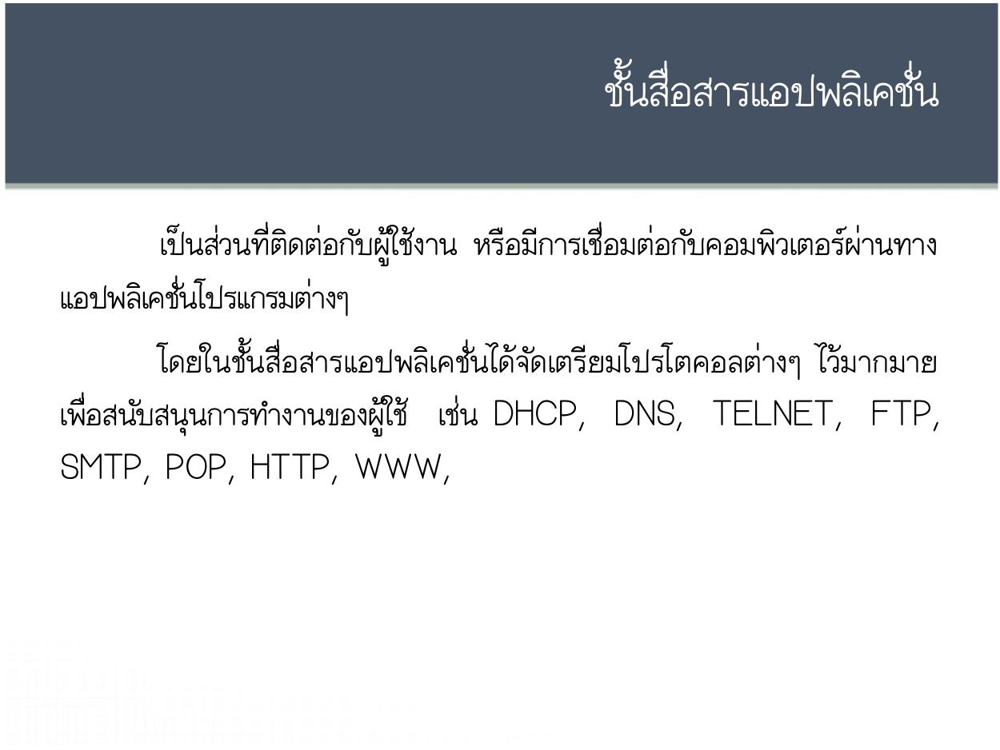
คลิกภาพเพื่อเปิดขยาย
อ่านข้อความต้นฉบับที่สกัดได้ (ไทย/อังกฤษตามไฟล์)
ชั้นสื่อสารแอปพลิเคชั่น
เป็นส่วนที่ติดต่อกับผู้ใช้งาน หรือมีการเชื่อมต่อกับคอมพิวเตอร์ผ่านทาง
แอปพลิเคชั่นโปรแกรมต่างๆ
โดยในชั้นสื่อสารแอปพลิเคชั่นได้จัดเตรียมโปรโตคอลต่างๆ ไว้มากมาย
เพื่อสนับสนุนการทางานของผู้ใช้ เช่น DHCP, DNS, TELNET, FTP,
SMTP, POP, HTTP, WWW,ทบทวนภาษาไทย: UDP, TCP และ SCTPDomain Name System: DNSRemote Login, E-mail และ FTPWorld Wide Web และ HTTP
กลับสารบัญ ↑หน้า 7 — โปรโตคอลบนชั้นสื่อสารแอปพลิเคชั่น
ดูภาพต้นฉบับหน้า 7
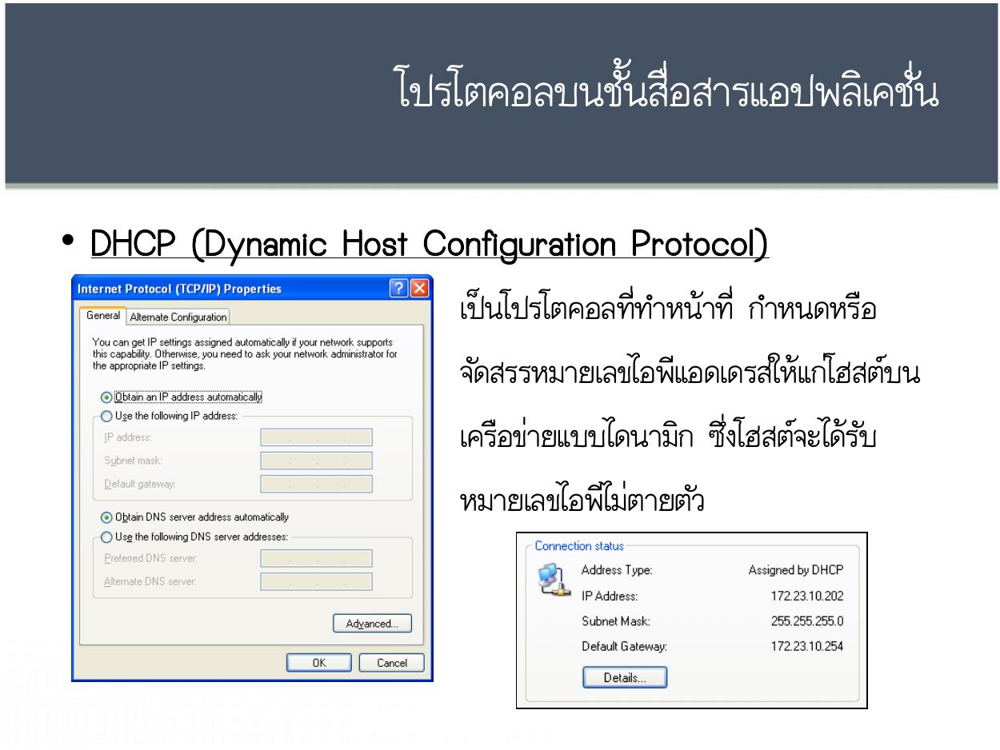
คลิกภาพเพื่อเปิดขยาย
อ่านข้อความต้นฉบับที่สกัดได้ (ไทย/อังกฤษตามไฟล์)
โปรโตคอลบนชั้นสื่อสารแอปพลิเคชั่น
• DHCP (Dynamic Host Configuration Protocol)
เป็นโปรโตคอลที่ทาหน้าที่ กาหนดหรือ
จัดสรรหมายเลขไอพีแอดเดรสให้แก่โฮสต์บน
เครือข่ายแบบไดนามิก ซึ่งโฮสต์จะได้รับ
หมายเลขไอพีไม่ตายตัวทบทวนภาษาไทย: UDP, TCP และ SCTPDomain Name System: DNSRemote Login, E-mail และ FTPWorld Wide Web และ HTTP
กลับสารบัญ ↑หน้า 8 — โปรโตคอลบนชั้นสื่อสารแอปพลิเคชั่น
ดูภาพต้นฉบับหน้า 8
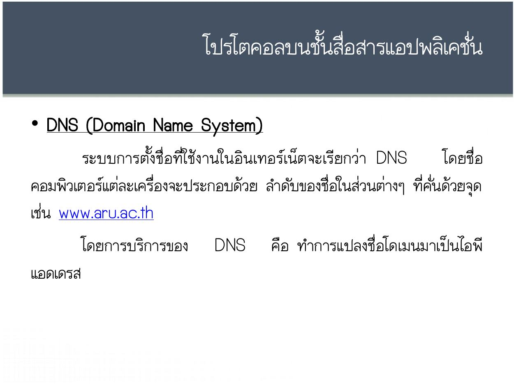
คลิกภาพเพื่อเปิดขยาย
อ่านข้อความต้นฉบับที่สกัดได้ (ไทย/อังกฤษตามไฟล์)
โปรโตคอลบนชั้นสื่อสารแอปพลิเคชั่น
• DNS (Domain Name System)
ระบบการตั้ง ชื่ อที่ใ ช้ งานในอินเทอร์ เน็ต จะเรี ยกว่ า DNS โดยชื่อ
คอมพิวเตอร์แต่ละเครื่องจะประกอบด้วย ลาดับของชื่อในส่วนต่างๆ ที่คั่นด้วยจุด
เช่น www.aru.ac.th
โดยการบริการของ DNS คือ ทาการแปลงชื่อโดเมนมาเป็นไอพี
แอดเดรสทบทวนภาษาไทย: UDP, TCP และ SCTPDomain Name System: DNSRemote Login, E-mail และ FTPWorld Wide Web และ HTTP
กลับสารบัญ ↑หน้า 9 — โปรโตคอลบนชั้นสื่อสารแอปพลิเคชั่น
ดูภาพต้นฉบับหน้า 9
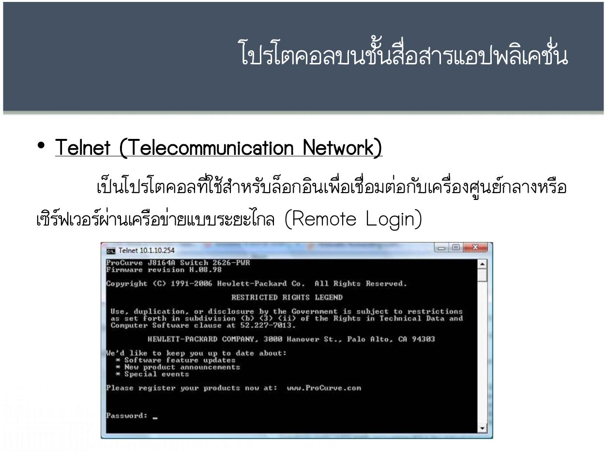
คลิกภาพเพื่อเปิดขยาย
อ่านข้อความต้นฉบับที่สกัดได้ (ไทย/อังกฤษตามไฟล์)
โปรโตคอลบนชั้นสื่อสารแอปพลิเคชั่น
• Telnet (Telecommunication Network)
เป็นโปรโตคอลที่ใช้สาหรับล็อกอินเพื่อเชื่อมต่อกับเครื่องศูนย์กลางหรือ
เซิร์ฟเวอร์ผ่านเครือข่ายแบบระยะไกล (Remote Login)ทบทวนภาษาไทย: UDP, TCP และ SCTPDomain Name System: DNSRemote Login, E-mail และ FTPWorld Wide Web และ HTTP
กลับสารบัญ ↑หน้า 10 — โปรโตคอลบนชั้นสื่อสารแอปพลิเคชั่น
ดูภาพต้นฉบับหน้า 10
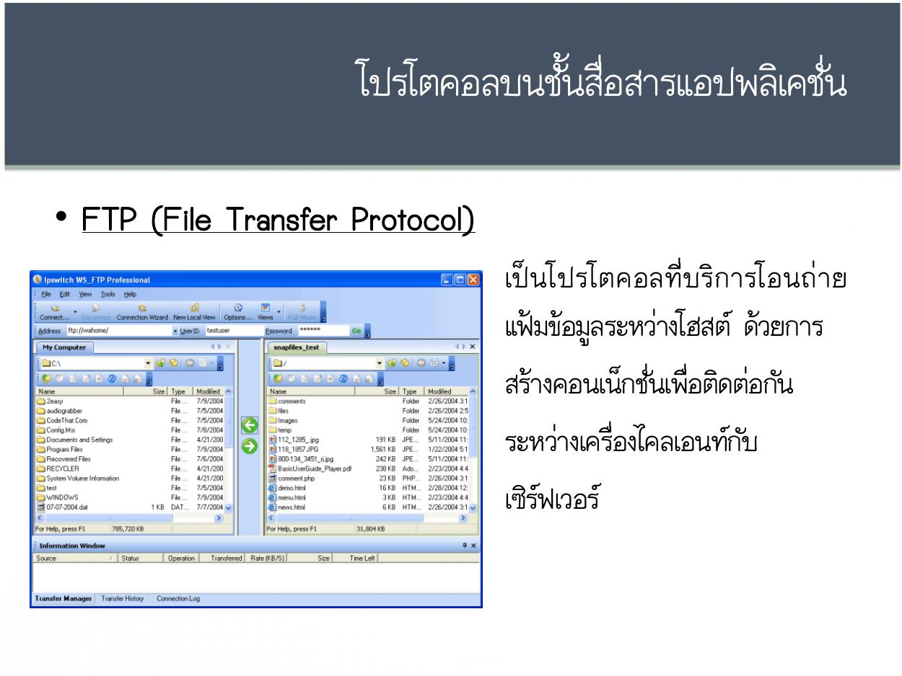
คลิกภาพเพื่อเปิดขยาย
อ่านข้อความต้นฉบับที่สกัดได้ (ไทย/อังกฤษตามไฟล์)
โปรโตคอลบนชั้นสื่อสารแอปพลิเคชั่น
• FTP (File Transfer Protocol)
เป็ น โปรโตคอลที่ บ ริ ก ารโอนถ่ า ย
แฟ้มข้อมูลระหว่างโฮสต์ ด้วยการ
สร้างคอนเน็กชั่นเพื่อติดต่อกัน
ระหว่างเครื่องไคลเอนท์กับ
เซิร์ฟเวอร์ทบทวนภาษาไทย: UDP, TCP และ SCTPDomain Name System: DNSRemote Login, E-mail และ FTPWorld Wide Web และ HTTP
กลับสารบัญ ↑หน้า 11 — โปรโตคอลบนชั้นสื่อสารแอปพลิเคชั่น
ดูภาพต้นฉบับหน้า 11
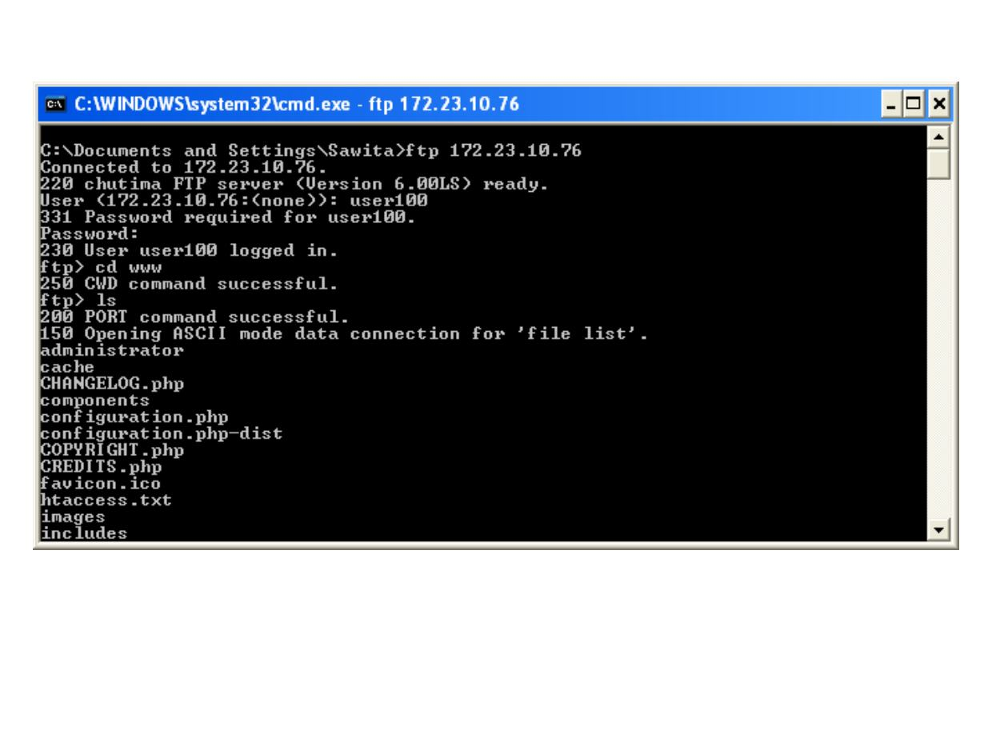
คลิกภาพเพื่อเปิดขยาย
อ่านข้อความต้นฉบับที่สกัดได้ (ไทย/อังกฤษตามไฟล์)
โปรโตคอลบนชั้นสื่อสารแอปพลิเคชั่น
ทบทวนภาษาไทย: UDP, TCP และ SCTPDomain Name System: DNSRemote Login, E-mail และ FTPWorld Wide Web และ HTTP
กลับสารบัญ ↑หน้า 12 — โปรโตคอลบนชั้นสื่อสารแอปพลิเคชั่น
ดูภาพต้นฉบับหน้า 12
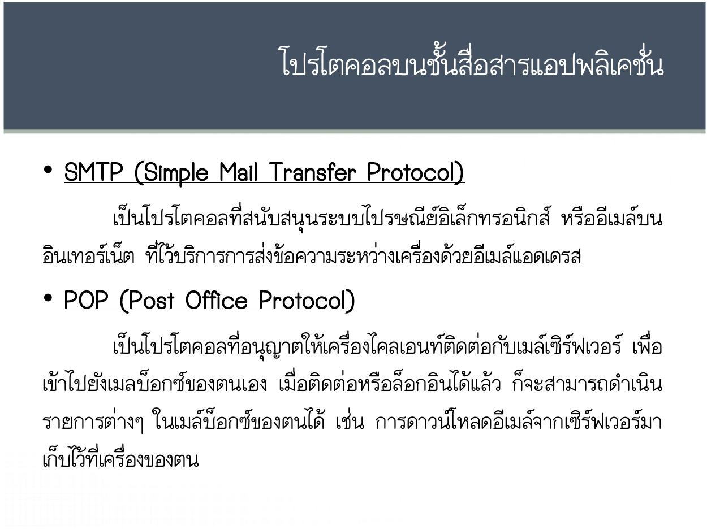
คลิกภาพเพื่อเปิดขยาย
อ่านข้อความต้นฉบับที่สกัดได้ (ไทย/อังกฤษตามไฟล์)
โปรโตคอลบนชั้นสื่อสารแอปพลิเคชั่น
• SMTP (Simple Mail Transfer Protocol)
เป็นโปรโตคอลที่สนับสนุนระบบไปรษณีย์อิเล็กทรอนิกส์ หรืออีเมล์บน
อินเทอร์เน็ต ที่ไว้บริการการส่งข้อความระหว่างเครื่องด้วยอีเมล์แอดเดรส
• POP (Post Office Protocol)
เป็นโปรโตคอลที่อนุญาตให้เครื่องไคลเอนท์ติดต่อกับเมล์เซิร์ฟเวอร์ เพื่อ
เข้าไปยังเมลบ็อกซ์ของตนเอง เมื่อติดต่อหรือล็อกอินได้แล้ว ก็จะสามารถดาเนิน
รายการต่างๆ ในเมล์บ็อกซ์ของตนได้ เช่น การดาวน์โหลดอีเมล์จากเซิร์ฟเวอร์มา
เก็บไว้ที่เครื่องของตนทบทวนภาษาไทย: UDP, TCP และ SCTPDomain Name System: DNSRemote Login, E-mail และ FTPWorld Wide Web และ HTTP
กลับสารบัญ ↑หน้า 13 — โปรโตคอลบนชั้นสื่อสารแอปพลิเคชั่น
ดูภาพต้นฉบับหน้า 13
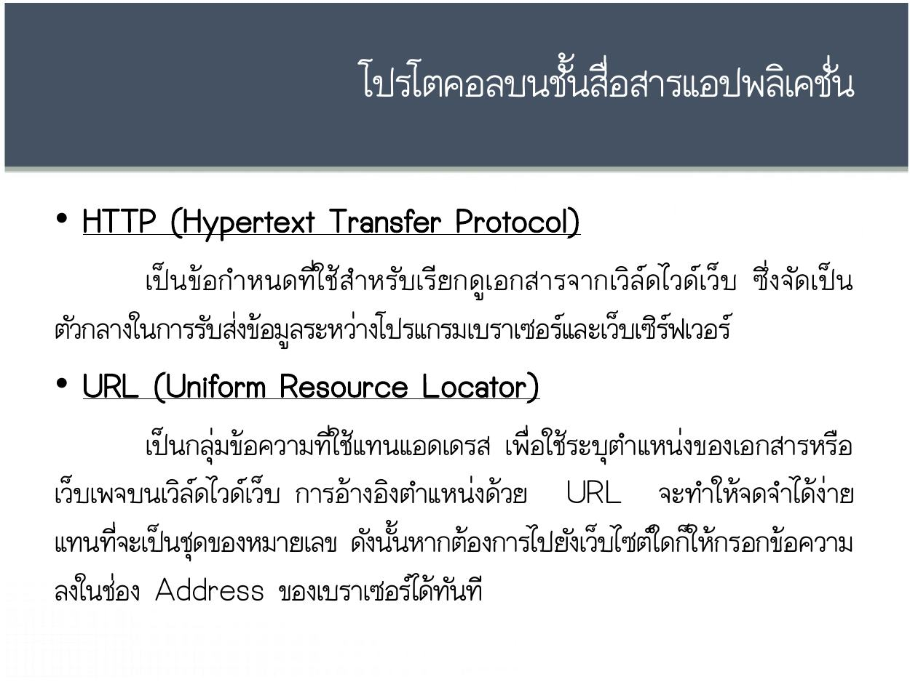
คลิกภาพเพื่อเปิดขยาย
อ่านข้อความต้นฉบับที่สกัดได้ (ไทย/อังกฤษตามไฟล์)
โปรโตคอลบนชั้นสื่อสารแอปพลิเคชั่น
• HTTP (Hypertext Transfer Protocol)
เป็น ข้อ กาหนดที่ ใ ช้ สาหรั บ เรี ยกดูเ อกสารจากเวิ ล์ ดไวด์ เว็ บ ซึ่ง จัด เป็ น
ตัวกลางในการรับส่งข้อมูลระหว่างโปรแกรมเบราเซอร์และเว็บเซิร์ฟเวอร์
• URL (Uniform Resource Locator)
เป็นกลุ่มข้อความที่ใช้แทนแอดเดรส เพื่อใช้ระบุตาแหน่งของเอกสารหรือ
เว็บเพจบนเวิล์ดไวด์เว็บ การอ้างอิงตาแหน่งด้วย URL จะทาให้จดจาได้ง่าย
แทนที่จะเป็นชุดของหมายเลข ดังนั้นหากต้องการไปยังเว็บไซต์ใดก็ให้กรอกข้อความ
ลงในช่อง Address ของเบราเซอร์ได้ทันทีทบทวนภาษาไทย: UDP, TCP และ SCTPDomain Name System: DNSRemote Login, E-mail และ FTPWorld Wide Web และ HTTP
กลับสารบัญ ↑หน้า 14 — โปรโตคอลบนชั้นสื่อสารแอปพลิเคชั่น
ดูภาพต้นฉบับหน้า 14
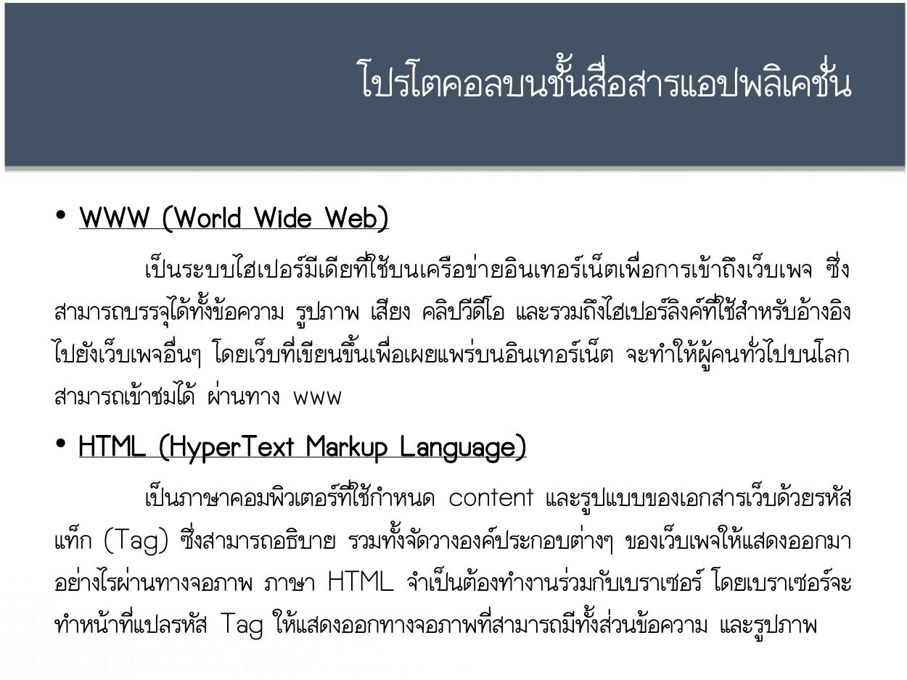
คลิกภาพเพื่อเปิดขยาย
อ่านข้อความต้นฉบับที่สกัดได้ (ไทย/อังกฤษตามไฟล์)
โปรโตคอลบนชั้นสื่อสารแอปพลิเคชั่น
• WWW (World Wide Web)
เป็น ระบบไฮเปอร์มีเ ดีย ที่ใ ช้บนเครือข่ ายอิน เทอร์เ น็ตเพื่อ การเข้ าถึ งเว็บเพจ ซึ่ ง
สามารถบรรจุได้ทั้งข้อความ รูปภาพ เสียง คลิปวีดีโอ และรวมถึงไฮเปอร์ลิงค์ที่ใช้สาหรับอ้างอิง
ไปยังเว็บเพจอื่นๆ โดยเว็บที่เขียนขึ้นเพื่อเผยแพร่บนอินเทอร์เน็ต จะทาให้ผู้คนทั่วไปบนโลก
สามารถเข้าชมได้ ผ่านทาง www
• HTML (HyperText Markup Language)
เป็นภาษาคอมพิวเตอร์ที่ใช้กาหนด content และรูปแบบของเอกสารเว็บด้วยรหัส
แท็ก (Tag) ซึ่งสามารถอธิบาย รวมทั้งจัดวางองค์ประกอบต่างๆ ของเว็บเพจให้แสดงออกมา
อย่างไรผ่านทางจอภาพ ภาษา HTML จาเป็นต้องทางานร่วมกับเบราเซอร์ โดยเบราเซอร์จะ
ทาหน้าที่แปลรหัส Tag ให้แสดงออกทางจอภาพที่สามารถมีทั้งส่วนข้อความ และรูปภาพทบทวนภาษาไทย: UDP, TCP และ SCTPDomain Name System: DNSRemote Login, E-mail และ FTPWorld Wide Web และ HTTP
กลับสารบัญ ↑